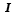
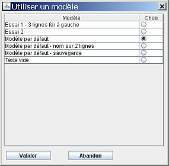

Créer un modèle - Barre de boutons - Choix du type - Mettre en forme - Zone de saisie - Les données variables - Conditions - Personne d'exemple - Exemple - Supprimer un modèle - Modèle par défaut - Appliquer un modèle - Exemples de modèles
Vous pouvez définir des modèles pour les étiquettes des personnes et pour les étiquettes des familles.
Pour créer un modèle de personne, il faut que l'arbre en cours d'édition contienne au moins une personne. Pour créer un modèle de famille, il faut que l'arbre en cours d'édition contienne au moins une famille. Cela permet, lors de la définition d'un modèle, de voir en temps réel un exemple d'étiquette appliqué à une des personnes ou à une des familles de l'arbre courant.
Pour créer un modèle, il faut aller dans le menu Fichier et choisir Modèles d'étiquettes. GénéGraphe ouvre une fenêtre pour créer et modifier vos modèles.
Cet écran comprend 7 zones qui sont :
Cette barre contient 7 boutons dont le rôle est :
| Nouveau modèle - ce bouton ferme (et éventuellement enregistre) le modèle courant et permet de définir un nouveau modèle. | |
| Ouvrir modèle - ce bouton ouvre un modèle existant (et éventuellement enregistre le modèle courant) pour le modifier. | |
| Enregistrer - permet d'enregistrer le modèle courant. | |
| Enregistre sous - permet d'enregistrer le modèle courant sous un nouveau nom. | |
| Renommer - ce bouton permet de changer le nom et la description du modèle courant. Il faut sauvegarder le modèle pour que ces modifications soient enregistrées. | |
| Supprmier - ce bouton supprime le modèle courant. Ce bouton n'est accessible que si aucun arbre n'utilise le modèle. | |
| Modèle par défaut - permet de définir le modèle par défaut utilisé lorsque vous ajoutez une personne à un arbre. |
Ces boutons sont accessibles ou pas. Cela dépend de l'état du modèle courant. Par exemple, quand le modèle est vide, il n'est pas possible de l'enregistrer.
Quand vous avez un modèle vierge, vous pouvez choisir le type de modèle que vous souhaitez créer. Tant que vous ne sauvegardez pas le modèle, vous pouvez changer le type. Si vous le faites, tout ce que vous avez déjà saisi sera effacé.
Quand vous changez le type de modèle, la liste des données variables (repère 5) change de contenu.
Ces boutons sont habituels dans un traitement de texte.
| choix de la police de caractères | |
| choix du corps (taille) des caractères | |
| alignement à gauche | |
| alignement au centre | |
| alignement à droite | |
| couleur du texte | |
| mise en gras | |
 |
mise en italique |
| soulignement du texte | |
| coupe le texte sélectionné dans le presse-papier | |
| copie le texte sélectionné dans le presse-papier | |
| colle le contenu du presse-papier à l'emplacement du curseur |
Dans cette zone, vous saisissez le texte de l'étiquette.
Vous pouvez :
Les données variables sont les valeurs qui dépendent de chaque personne ou de chaque famille. Les données variables pour les personnes sont :
Nom de la variable |
Fonction |
| <nom> | Nom de la personne |
| <prenomUsuel> | Prénom usuel de la personne : si le prénom usuel de la personne n'est pas le premier, il faut modifier la fiche de la personne dans GénéaMania pour le placer entre les caractères « < » et « > ». Quand GénéGraphe trouve un prénom entre ces caractères, c'est ce prénom qui sera considéré comme prénom usuel sinon c'est le premier prénom qui sera pris en compte. |
| <prenoms> | Tous les prénoms de la personne |
| <dateNais> | Date de naissance |
| <villeNais> | Ville de naissance |
| <dateDeces> | Date de décès |
| <villeDeces> | Ville de décès |
| <e> | Accord masculin/féminin : pour que certains mots (par exemple « Né » ou « Décédé ») s'accordent au genre de la personne, il faut mettre la variable <e> là où vous voulez que l'accord se fasse (par exemple « Né<e> » ou « Décédé<e> »). Cette variable <e> s'applique à n'importe quel texte. (Voir des exemples) |
| <deptNais> | Département de naissance |
| <regionNais> | Région de naissance |
| <paysNais> | Pays de naissance |
| <deptDeces> | Département de décès |
| <regionDeces> | Région de décès |
| <paysDeces> | Pays de décès |
| <ageDeces> | Âge au décès |
| <autresNoms> | Liste du ou des autres noms de la personne |
| <SI> | Voir les explications sur les conditions (Voir des exemples) |
Les données variables pour les familles sont :
Nom de la variable |
Fonction |
| <dateMariage> | Date du mariage |
| <dateActe> | Date de l'acte notarial du contrat de mariage |
| <nomNotaire> | Nom du notaire |
| <villeMariage> | Ville du mariage |
| <deptMariage> | Département du mariage |
| <regionMariage> | Région du mariage |
| <paysMariage> | Pays du mariage |
| <villeNotaire> | Ville du notaire |
| <deptNotaire> | Département du notaire |
| <region> | Région du notaire |
| <paysActe> | Pays du notaire |
| <SI> | Voir les explications sur les conditions (Voir des exemples) |
Pour mettre en place une variable, vous avez deux possibilités :
| Les conditions vous permettent de voir du texte si une variable est renseignée. Par exemple, si votre étiquette affiche la date de décès et que la personne n'a pas de date de décès, vous obtiendrez cette étiquette. | |
Pour ne pas afficher la troisième ligne, il faut utiliser une condition. L'étiquette doit contenir la formule qui peut se lire : si la date de décès est renseignée, alors il faut afficher le texte « Décédé<e> le <dateDeces> à <villeDeces> » |
|
L'étiquette affichée contiendra alors : |
Suivant les besoins, vous pouvez utiliser une syntaxe du genre :
Entre les mots <SI> et < ALORS>, il faut placer une variable. Cela permet de tenir compte de deux possibilités, soit elle est renseignée, soit elle n'est pas renseignée.
Si la variable est renseignée, GénéGraphe prend en compte tout ce qui se trouve entre les mots <ALORS> et <SINON> ou <ALORS> et <FINSI> suivant que vous utilisiez la syntaxe 1 ou 2.
Si la variable n'est pas renseignée, GénéGraphe prend en compte tout ce qui se trouve entre les mots <ALORS> et <FINSI> ou <SINON> et <FINSI> suivant que vous utilisiez la syntaxe 2 ou 3.
Plusieurs exemples vous sont proposés.
Cette liste vous propose de choisir, parmi les personnes ou les familles présentes dans l'arbre courant, celle qui servira d'exemple.
Dans ce cadre, vous voyez immédiatement toutes les modifications que vous apportez au modèle. La dimension de l'exemple s'adapte au contenu.
Ce bouton ( ) est accessible uniquement si l'étiquette n'est utilisée dans aucun arbre. Quand vous cliquez dessus, le modèle est supprimé.
) est accessible uniquement si l'étiquette n'est utilisée dans aucun arbre. Quand vous cliquez dessus, le modèle est supprimé.
Le modèle par défaut est utilisé quand vous ajoutez une personne ou une famille à un arbre. Pour définir le modèle à utiliser par défaut, il faut cliquer sur le bouton  . GénéGraphe vous propose la liste des modèles existants.
. GénéGraphe vous propose la liste des modèles existants.
Le type de modèle par défaut (personne ou famille) dépend du choix que vous faites (voir repère 2).
Choisissez le modèle à utiliser par défaut en cliquant dans la colonne Choix et cliquez sur le bouton Valider.
Pour utliser un modèle à une personne, il faut faire un clic droit  sur la personne. GénéGraphe vous propose alors la liste des modèles disponibles.
sur la personne. GénéGraphe vous propose alors la liste des modèles disponibles.

Il sufit de sélectionner le modèle à utiliser en le sélectionnant dans la colonne Choix. Quand vous cliquez sur le bouton Valider, GénéGraphe utilise ce modèle pour afficher les renseignements de la personne.
Pour appliquer un modèle à une famille, faites un clic droit sur l'étiquette de la famille. Vous obtenez la même fenêtre que ci-dessus. L'application d'un modèle respecte la même démarche.